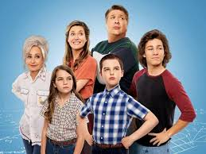

Sinopse
Young Sheldon é uma série derivada de The Big Bang Theory que explora a infância do gênio Sheldon Cooper no Texas. A produção revela os desafios de um menino prodígio em um ambiente familiar e escolar comum.
Personagens Principais
- Sheldon Cooper – Um menino superdotado que ama ciência.
- Mary Cooper – Mãe dedicada e religiosa.
- George Cooper Sr. – Pai técnico de futebol.
- Missy Cooper – Irmã gêmea de Sheldon.
- Georgie Cooper – Irmão mais velho.
- Meemaw – Avó divertida e parceira de Sheldon.
Curiosidades
"A série estreou em 2017 e oferece uma visão sensível e engraçada do crescimento de uma mente brilhante."
Ambientada nos anos 1980 e 1990, a série destaca o contraste entre a genialidade de Sheldon e a vida comum de sua família.
Família Cooper
A família Cooper é o núcleo central da série, mostrando as dinâmicas e desafios de um lar amoroso e complexo.
Música de Abertura
A música tema é "Mighty Little Man" de Steve Burns. Ouça abaixo: